Product Overview
Masking Tape is a pressure-sensitive adhesive tape used
for masking off areas during painting, surface protection,
labeling, and temporary fastening applications.
Designed to remove cleanly without leaving residue, these
tapes provide excellent adhesion while ensuring easy removal,
making them ideal for both professional and general-purpose use.
Key Features
- Clean removal without residue
- Provides sharp and precise paint lines
- Easy to tear and apply
- Good adhesion on multiple surfaces
- Suitable for indoor applications
Specifications
- Material: Crepe Paper with Adhesive
- Adhesive Type: Rubber-based
- Width: Multiple sizes available
- Colour: Natural / Off-white
- Usage: Temporary masking and protection
Applications & Use Cases
- Painting and decorating work
- Surface protection during finishing
- Automotive and furniture painting
- Packaging and labeling
- General industrial and household use
Best Suited For
- Interior painters requiring clean paint edges
- Automobile and furniture refinishing work
- Temporary surface protection during fabrication
Selection Note
For Indian conditions, masking tape should be removed
soon after paint drying to avoid adhesive residue,
especially in high-temperature environments. For longer
masking durations, higher-grade tapes are recommended.
Commonly Used Along With
- Plastic Sheets or Floor Protection Sheets
- Paint Rollers and Brushes
- Surface Cleaning Cloths
Product FAQs
-
Is masking tape suitable for Indian weather conditions?
Standard masking tape is suitable for indoor use in Indian conditions.
For high temperatures or longer durations, higher-grade tapes are recommended.
-
How long can masking tape be left on painted surfaces?
Masking tape should ideally be removed within 24 hours after painting
to avoid adhesive residue, especially in warm climates.
-
Does masking tape damage paint or polished surfaces?
When applied on clean surfaces and removed on time, masking tape
does not damage paint or polished finishes.
-
Which width of masking tape should be selected?
Narrow widths are used for detailed work, while wider tapes
are preferred for wall edges, flooring, and large surface masking.
-
Can masking tape be used for packaging?
Masking tape can be used for light packaging and labeling,
but it is not recommended for heavy-duty sealing.
-
Are bulk quantities available for contractors?
Yes. Masking tapes are available in bulk quantities for
painters, contractors, and industrial users.
 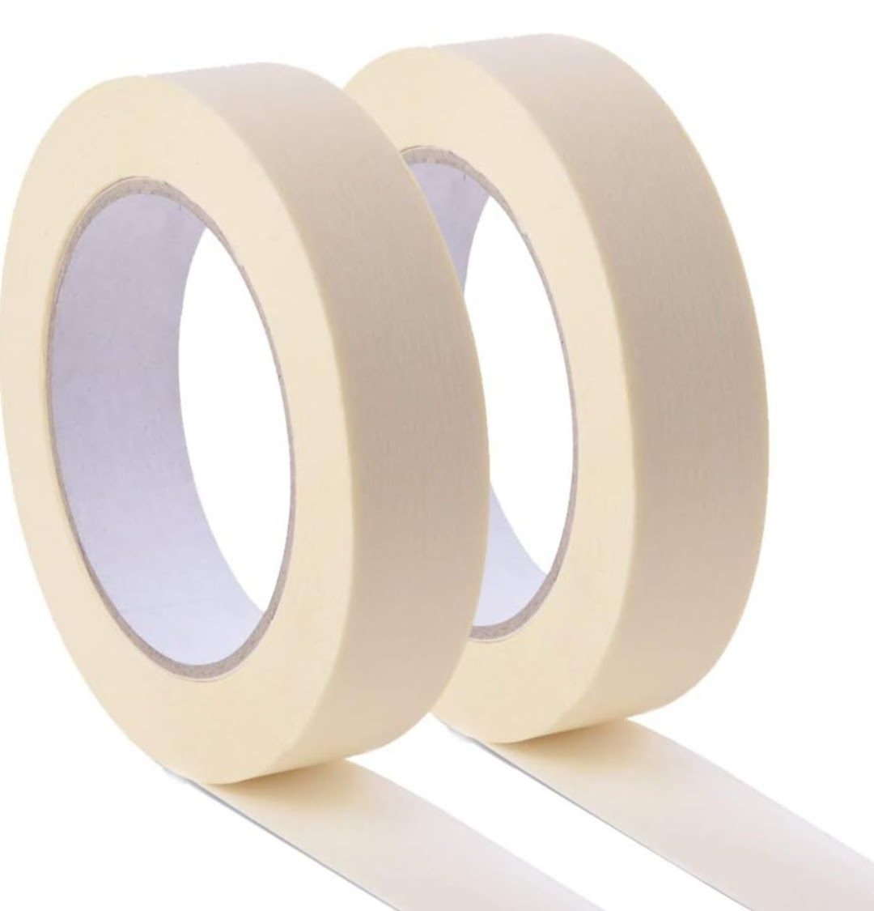
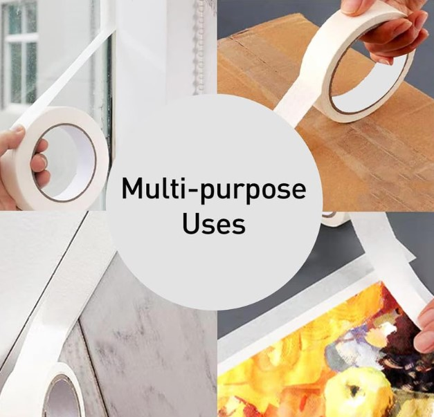
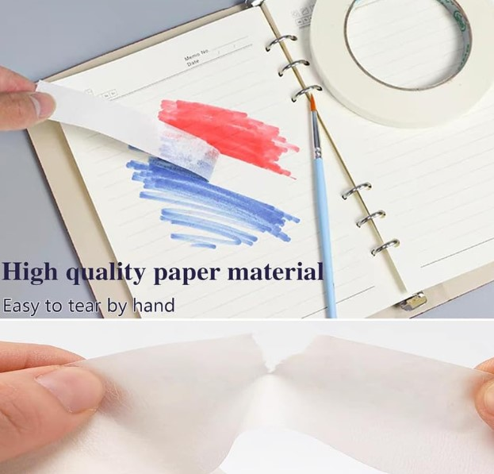
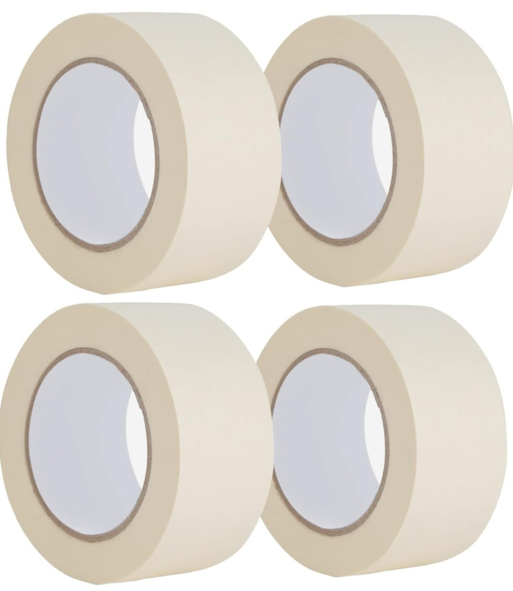
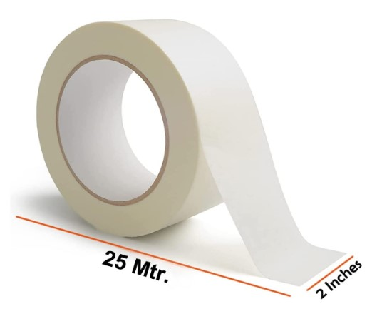
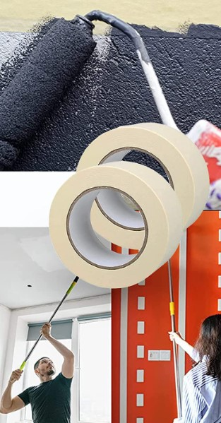
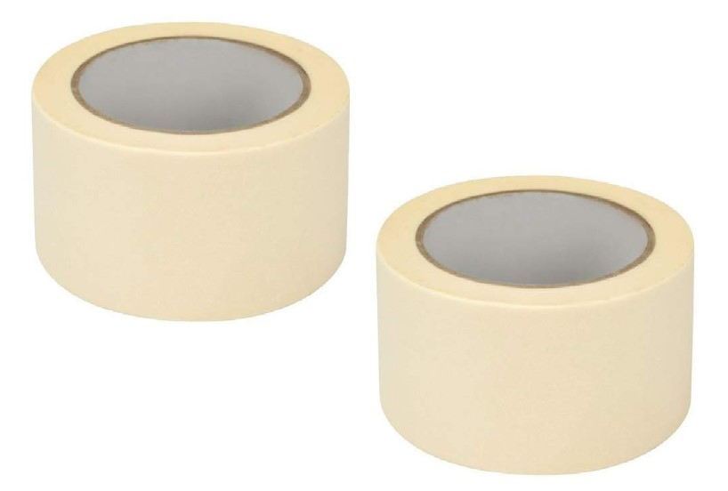
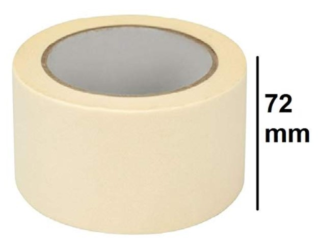
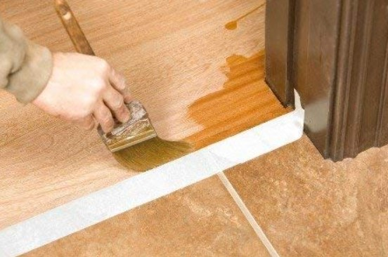
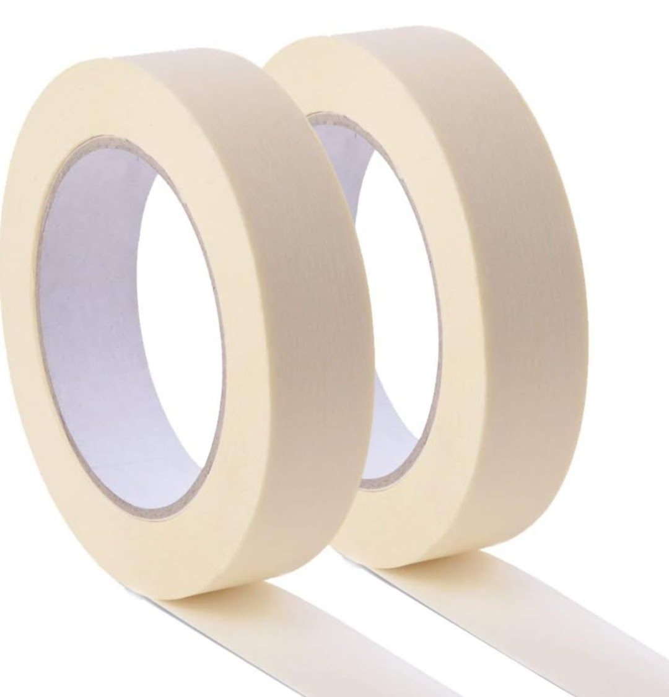
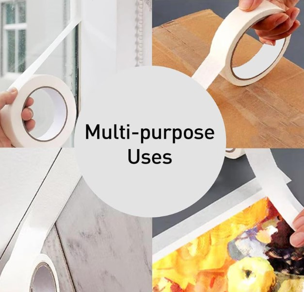
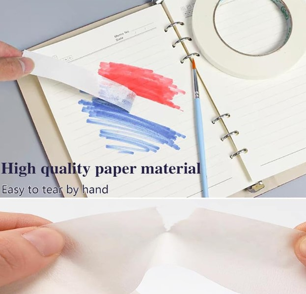
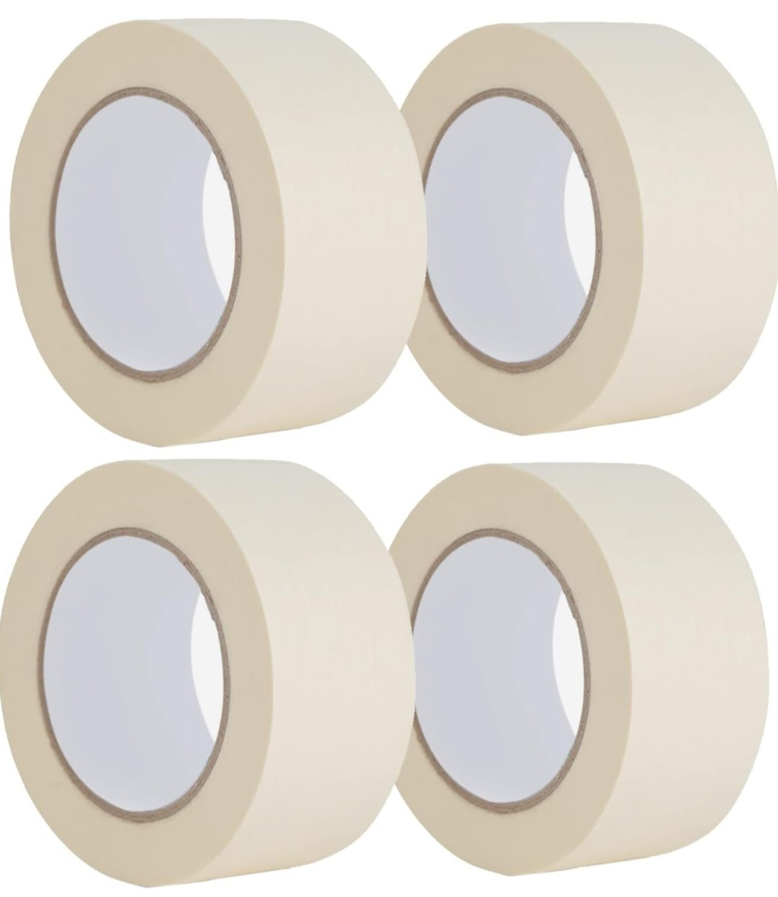
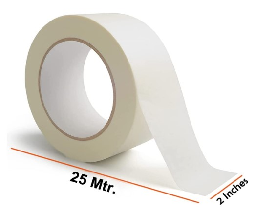
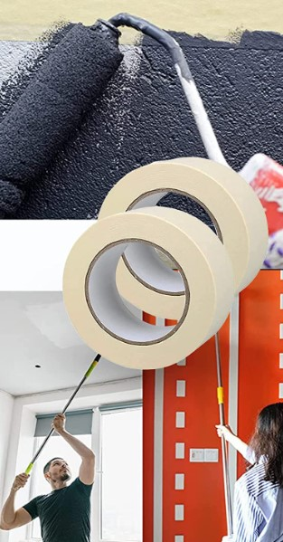
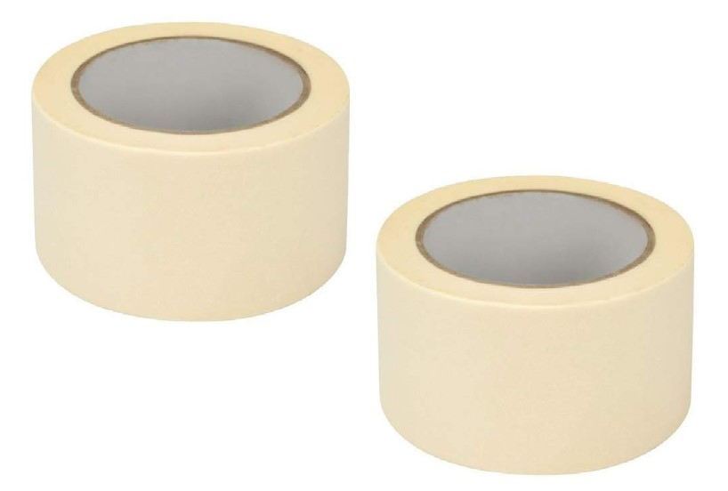
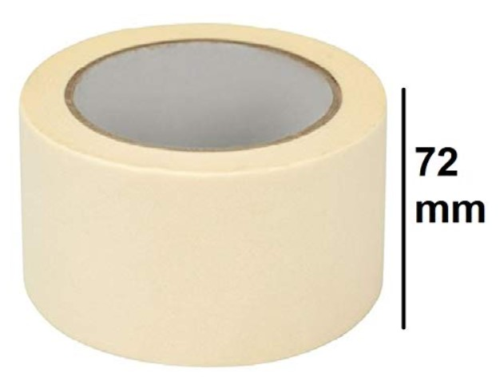
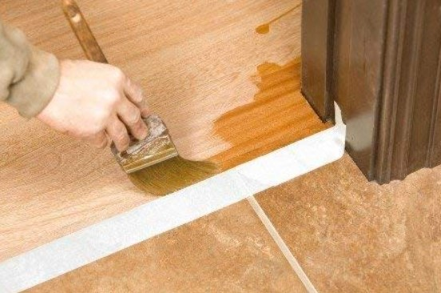